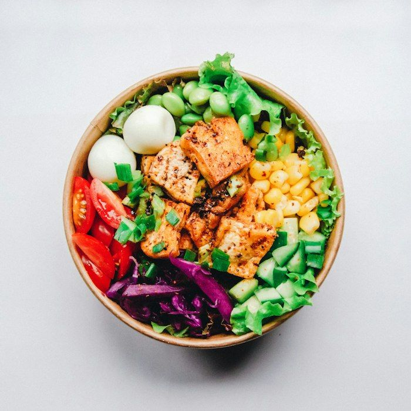
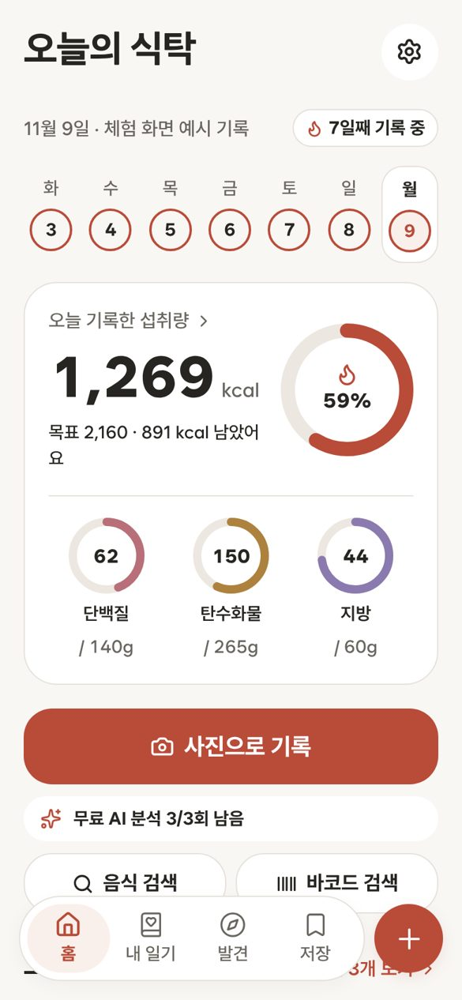
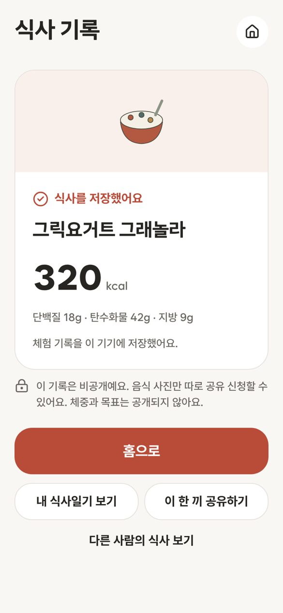
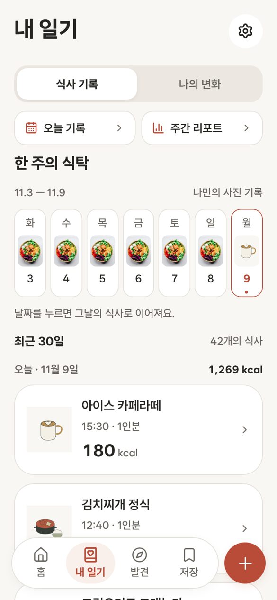

1
찍기
먹기 전에 사진 한 장
밥심 AI는 음식 사진이나 설명으로 칼로리와 영양을 추정하고, 내 몸에 맞춘 목표와 함께 식사를 기록하는 앱입니다.
안드로이드·iOS 출시 소식은 이 페이지에서 알려드려요.


먹기 전에 사진 한 장

음식과 양을 고치고 저장

하루·주간 흐름을 한눈에
사진을 찍으면 AI가 음식과 양을 추정합니다. 결과는 저장 전에 직접 고칠 수 있고, 음식 검색·바코드·직접 입력으로도 기록할 수 있습니다.
식사일기·체중·목표는 기본 비공개입니다. 공유하고 싶은 한 끼만 골라 신청하면 운영자 검토 후 공개됩니다.
사진으로 추정한 음식과 양, 영양정보는 실제와 다를 수 있습니다. 밥심은 의료 진단이나 치료를 제공하지 않습니다.
처음에는 AI 사진 분석을 3회 무료로 써 볼 수 있어요. 이후 AI 분석은 구독으로 이용하며, 음식 검색·바코드·직접 입력은 AI 분석 없이 기록할 수 있어요.
아니요. 식사일기·체중·목표는 기본 비공개예요. 직접 고른 한 끼만 공유 신청할 수 있고, 운영자 확인 후 공개돼요.
사진으로 추정한 값이라 실제와 다를 수 있어요. 저장 전에 음식과 먹은 양을 직접 고칠 수 있어요.
앱의 설정에서 계정을 삭제할 수 있어요. 앱을 쓸 수 없다면 계정 삭제 안내 페이지의 이메일로 요청해 주세요.
모아랩스 · hwang0217@gmail.com